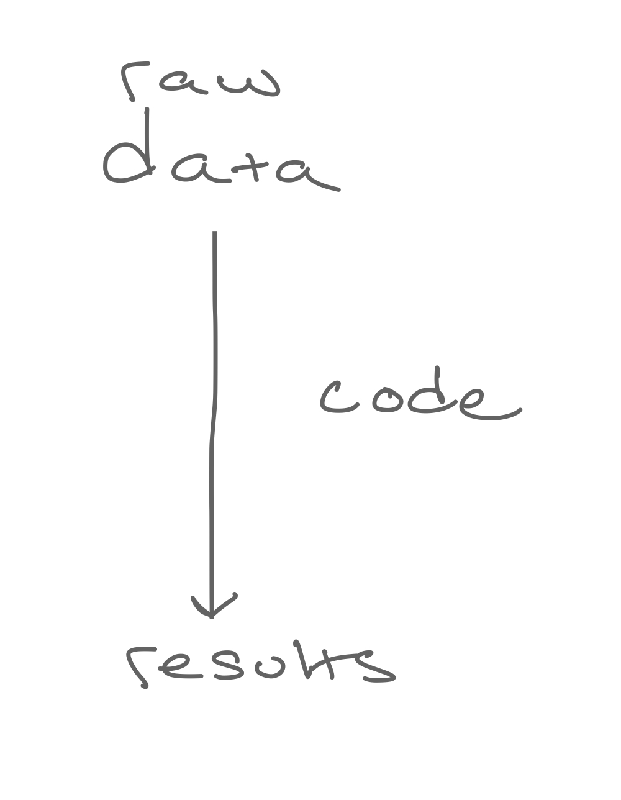
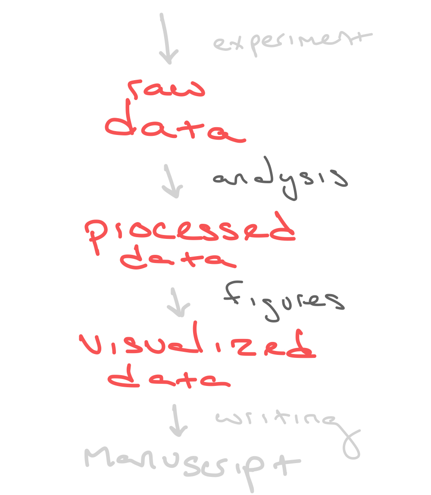
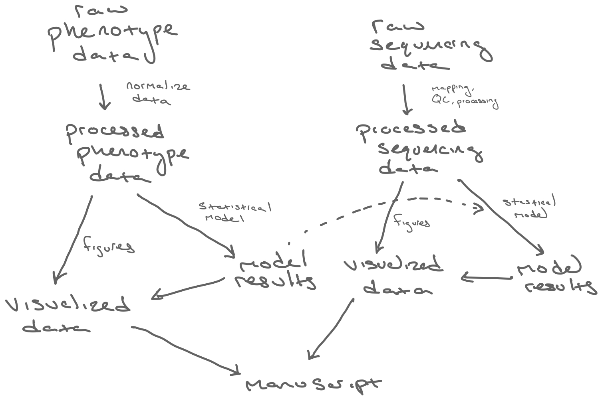
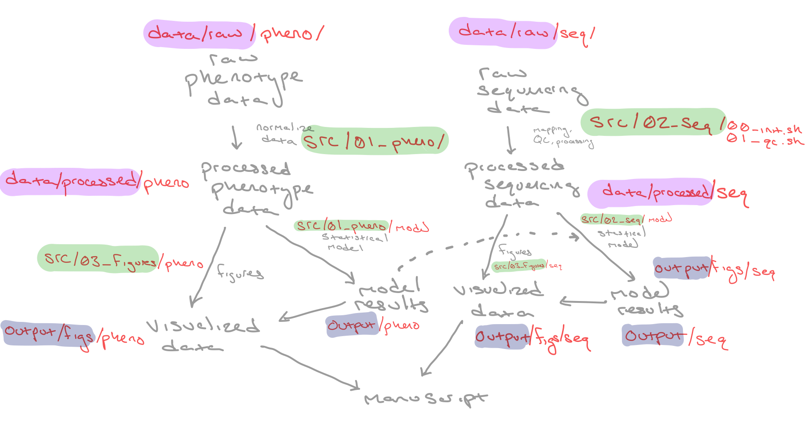

# Load data
dat <- readr::read_csv(here::here("data/raw/counts.csv"))1 Reproducibility
Reproducibility is an integral part of science. Its core idea is simple enough, even if it covers a broad set of ideas. To ensure we are on the same page, I will loosely define terms1, before moving on to some practical principles of computational reproducibility.
- Results reproducibility – if you do the same thing, you should get the same results. This is the essence of the scientific method.
- Inferential reproducibility – reliably draw the same types of conclusions from different sets of experiments2.
- Methods reproducibility – description of the methods are sufficiently detailed, complete, and accurate enough so that the experiment may be replicated in full.
This workshop is focused on a narrow set of methods reproducibility, computational reproducibility, for which, I am adopting the formal definition: “obtaining consistent results using the same input data; computational steps, methods, and code; and conditions of analysis” (National Academies of Sciences, Engineering et al. 2019). That definition can seem self-evident, so for a practical, working definition, consider asking yourself the following questions.
Questions to ask yourself
- Will I be able to re-run this code, on a new computer, without alteration, and obtain identical results?
- Is there a clear workflow to obtaining all results and figures?
- Can I easily (i.e., in very few steps) replicate all these results by sourcing these scripts? Or do I need to go line-by-line, file-by-file, possibly fixing errors along the way, to ensure that it works?
- One year from now, will I be able to understand and replicate what I did?
- Will any interested party (e.g., collaborators, reviewers, or the public at large) be able to clone the project directory and run the code on their local machines without issue and without asking for any clarifications?
If the answer to any of those questions above is not yes, then you have some room for improvement in your computational reproducibility. That is totally fine – this is why you are taking this workshop3! Reproducibility is a process4 – but there are small and meaningful ways that you can make your projects a little better. So let’s dive in!
1.1 Overall goal
Take raw data and turn it into results

You may think of your results as the product that you share with the world. But in this workshop I want to encourage you to also include the raw data and code as part of that final product. And not only that, but possibly reframe your thinking so that you see the raw data and code as the ulimate source of truth. In other words, your results only exist because of the raw data and how you analyzed them, so they are more an emergent property than a source of truth.

The final product of your work is often a manuscript. Computational reproducibility is focused ensuring that the results you are interpreting in the manuscript can be easily recreated from your raw data.

It can get complicated relatively quickly, but there is often the same general workflow present. Keeping this in mind can help us set up a directory structure, that can work well across different types of projects.

Here we have examples of a nested directory structure where we have three major directories within the project.
data/– contains bothraw/andprocessed/datasrc/– contains all the source code used to analyze the phenotype & sequencing data, and create all the figures. Notice how these are nested in subdirectories and numbered as well.output/– contains all the output results includingfigs/and each models or tables related to each specific analyses in their own subdirectory.
The goal of computational reproducibility is to take the files in your data/raw/ and src/ folders and be able to generate all of the data/processed/ and output/ files.
1.2 Practical reproducibility
Much of the advice on computational reproducibility is somewhat abstract6. That is, in part, the nature of the beast. Each project represents its own unique challenges. But it is also because the advice is often made for a broad range of projects in all sorts of different programming languages on everything from model simulations to genome assembly, all the way to creating programmatic tools for others. In contrast, this workshop will focus on a narrower set of tasks related to statistical programming in R7. In other words, the type of programming where you have some raw data generated elsewhere (e.g., enzyme activity or species abundance data) that you are going to preform some sort of analysis on it (e.g., normalization and a significance test), and then make figures.
TL;DR - Practical tips for computational reproducibility 8
R & RStudio specific tips
- Use the Projects feature in R.
- Start with a blank slate! Do not save
.RDataon exit, and do not restore.RDataon open. You can change this default behavior in RStudio in the Global Options. - Use tidyverse packages! See the tidyverse chapter of this workshop.
- Take advantage of the templates for RMarkdown and Quarto if you are learning how to make them.
Repository tips
- Use a consistent directory structure. You can save this structure as a template!
- Use sub-directories. Favor an ordered highly nested directory structure, over a directory with dozens of files with long and repetitive names.9
- Add number prefixes to your scripts (and possibly directories), so it is clear which order they must be run
01_normalize_data.R. - Try a subdirectory structure that is symmetrical – this makes it easier to know where the relevant info is saved. For example, the data from
data/raw/pheno/2023-07-04_data.csvcould be analyzed in a script insrc/pheno/01_anova.R, and the output could be saved inoutput/pheno/anova_results.rdsand the corresponding figure saved inoutput/figs/pheno/boxplot.pdf. In each case, there is apheno/subdirectory.
Script writing
- Every script should be able to run without errors from top to bottom (i.e., in R,
source(file_name.R)or clicking the source button in RStudio should always work when you save a file). - When you are using multiple packages with overlapping function names, the order that you load the libraries can matter. If you have this make sure you can
- Avoid magic numbers. Unexplained numbers within the middle of the script that could easily be replaced with assigning the number to a named variable at the top of the script.
- The order of each script should make sense and be consistent (e.g., description, load packages, load data, manipulate data, save data). If you find yourself violating this rule, either by loading packages later in a script or multiple saves of data intermediates within a file, it may make sense to split up the script.
- Favor small scripts that are focused on a single task, over big scripts that do many things.
- You should be able to run every script with a completely clean global environment.
- Develop a consistent coding style (e.g., snake_case, indents, comments). See the tidyverse style guide for a good set of rules.
- You should be able to clone the parent directory of the project and run the scripts without alteration on any machine.
- A small tip: You may find that in your scripts you are using bits of code written by other people (e.g., collaborators or random helpful people on the internet) in your analysis, rather than take each idiosyncratic choice they made as gospel, get in there and mess with it, see what is necessary and what isn’t. Figure out how each of line moves you towards your goal.
Data handling
- Avoid any manual manipulation of data (i.e., don’t mess around copy-and-pasting or editing raw data. Change it reproducibly with code.
- Save output automatically by writing it into the code (e.g.,
saveRDS(),readr::write_csv(),ggsave()). - Save intermediate data. If you are starting with a big data set, it is nice save that intermediate so a collaborator (or you in the future, or some random researcher on the internet), can re-do an intermediate step rather than begin from raw data. If they want to know how different you results would look normalized your data in a different way
Random pet-peeves
- Don’t copy and paste output into R scripts. If you need to save an output table, then write it to a csv or save it as an rds file. If you need quick access to some intermedite info then use RMarkdown or Quarto to create html reports.
- Don’t include anything that isn’t necessary to your final product in your code.
- Opt for long and explicit variable/function names over short and implicit names.
- Do not save
install.packages("some_package")in your script – even if it is commented out.10
Version control
- Commit and push relatively often. This makes your commit history a useful record the changes you have made. It also makes it less likely that you will run into issues pushing and pulling. Or at least less traumatic if you do run into issues.
- Use RStudio’s built in version control tools. There are easy ways to interact with Git and GitHub with the RStudio IDE.
- Always
pullfirst – just in case your local state is a little behind. - Don’t commit large files (e.g., raw data or large pdf figures) to version control. The software usually has limits.
1.3 Ten simple rules
The tips outlined above are a useful and specific starting point. But rather than rely solely on my proclivities, let’s instead adopt these simple rules from Sandve et al. (2013). Over the course of this workshop, we will look at some specific coding practices and think about how they may violate, or adhere to, one (or more) of these rules. The additional benefit of adopting these rules is that they are easy enough to apply to other types of projects. It is worth reading in full.
1.4 Opening in RStudio
Okay, let’s begin by opening up RStudio. Do you have objects already in your Global Environment? Is the console full of code you ran last time? Or do you always keep RStudio running, because you are worried about loosing the results you finally managed to get, and you need to do more stuff later?
I know people that do great work in R and live their lives like this – but it kinda makes me sweat. How do you know what is real? What if those objects were created under some other conditions and you have since edited your script? How many packages do you have loaded? What are they? It stresses me out, in part because you are violating Rule 1 – you don’t necessarily have a good track record of how that object was produced. It could be something that you executed long ago and you have since changed your script. You want your source of truth11 to be the script. In other words, the list of specfic commands that take you from raw data to your results. Zombie objects in the Global Environment are not your friend.
Tip: Set up a blank slate in RStudio by default
There is an easy way to set up a blank slate as RStudio’s default behavior. Just execute usethis::use_blank_slate() in the console and it will ensure that the Global Options of RStudio are configured in such a way that you have a blank slate each time you open R12. Alternatively, you can manually adjust the Global Options as explained here.
It is best practice to start with a blank slate every time you open RStudio. This will force you to rely solely on the code in front of you. Rather than something that may or may not be what you remember it to be. This approach also has the added benefit of mimicking the environment of someone else sitting down at their own machine, trying to replicate your results.
There are ultimately only two sources of truth
- Raw data
- Source code
You should build every project with that in mind. You need to ensure that anyone can get from your raw data to your results13 using only your scripts!
1.5 Projects in RStudio
Projects are your friend.
Let’s create a new project together now!
Jenny Bryan, a developer at RStudio, has an impassioned blog post on why you should embrace a project-oriented workflow. You should probably read her post in full, because if you don’t listen, she is threatening to set your computer on fire 🔥. But seriously, you should read it.
As a way of quickly summarizing one of her points: you should make sure that your final product (i.e., your script) is completely free of things that are specific to your own personal habits. For example, do you have something similar to setwd("/Users/tsoleary/R/workshop_2023") at the start of your script? Or in some other way, are you using absolute paths? If you do, then for a certainty if someone else wants to run your code, they will have to edit it to make sure they don’t immediately run into an error. This means that right off the bat, your code is not reproducibility-friendly. As a remedy, she suggests using projects and the here package discussed below.
here package
The here package is a great way to make sure that your code can be run easily on someone else’s machine. Jenny Bryan has another post dedicated specifically to the here package: read it here.
here::here
As you’ll notice above rather than load the here package with library(here) and then use the here() function, I use the package::function_name notation to call the here function without attaching the whole here package. The added bonus is that it is kinda fun to say Here, Here! 🍺
I find the here package very useful for working with RMarkdown documents. By default, RMarkdown documents often use what ever directory that document is in as its root directory, so then all relative paths are in relation to where ever that RMarkdown document happens to be. But the here package allows you to continue to use the project root for your relative paths!
1.6 Directory structure
There are probably thousands of ways you could structure your files in a project – but there are really only two ways of going about it. The first is ad hoc. You group up files into subdirectores as you go along, tailoring the structure into something that makes sense to you, or at least something that is workable. And the other way, is to establish a template directory structure and build off that.
For most of the time I have worked in R, I have used the ad hoc approach. And the best I can say for it is that it can get the job done. In my eyes, each of those projects are their own unique snowflake. But if you ask someone else to look at it, they may think a dungeon maze is more apt a metaphor. Which of these scripts should I run first? Wait, where is all your raw data? Where are your final figures? It is best if the directory structure answers these questions on its own. So I have come to embrace a consistent directory structure.
Example directory structures
Take a look at my template directory structure.. I did a bunch of poking around on the internet and thinking about it and this is where I landed. It has already evolved somewhat since I started14. But here are a few useful links that I found in my stumblings that you should check out:
- PLOS Comp Bio: A quick guide to organizing computational biology projects (Noble 2009)
- Blog post with a few thoughts on strucuring R projects
- The Johns Hopkins Data Science Lab tips for organizing projects.
- Youtube playlist by Danielle Navarro, author of the Learning Statistics with R.
- Jenny Bryan’s thoughts on formatting from her course on stats
- Data management plan that will make you laugh
Below is an example of a directory structure template:
├── src/
│ ├── 01_analysis/
│ ├── 02_analysis/
│ └── 03_figures/
├── data/
│ ├── raw/
│ └── processed/
├── output/
│ ├── figs/
│ └── tables/
├── docs/
│ └── index.qmd
├── scratch/
├── README.md
└── .gitignoresrc– the source code, the ultimate source of truthdata– the raw data and intermediate processed dataoutput– output results and figuresdocs– a place where I compile all results to share with collaboratorsscratch– messy code I have rec
This is a simplified example of the project I am working on right now.
├── src/
│ ├── 00_pheno/
│ │ └── 00_pheno.R
│ ├── 01_nuclei/
│ │ ├── 00_count_nuclei.ijm
│ ├── 02_cellranger-arc/
│ │ ├── 00_mkref.sh
│ │ ├── 01_count.sh
│ │ └── 02_aggr.sh
│ ├── 03_seurat/
│ │ ├── 00_create_seurat_object.R
│ │ ├── 01_quality_control_filtering.R
│ │ └── 02_initial_cluster.R
│ └── 04_plots/
│ │ ├── annot.R
│ │ ├── cluster.R
│ │ └── final.R
├── data/
│ ├── raw/
│ │ ├── annot/
| | │ ├── calderon_markers.csv
| | │ ├── dmel_cell-cycle_genes.csv
| | │ └── insitu_annot.csv
│ │ ├── nuclei/
│ │ ├── pheno/
│ │ └── seq/
│ ├── processed/
| | │ ├── annot.rds
| | │ ├── cluster_all.rds
| | │ └── cluster_manual.rds
│ │ ├── annot/
│ │ ├── genes/
│ │ ├── seq/
│ │ └── seurat_object/
| | │ ├── 00_dat_raw.rds
| | │ ├── 01_dat_qc.rds
| | │ └── 02_dat_clust.rds
├── docs/
│ └── index.qmd
├── output/
│ ├── figs/
| │ ├── annot/
| | │ ├── umap.pdf
| | │ └── tsne.pdf
| │ ├── cluster/
| | │ ├── umap.pdf
| | │ └── tsne.pdf
| │ ├── final/
| | │ ├── fig_1.pdf
| | │ ├── fig_2.pdf
| | │ └── fig_3.pdf
│ ├── tables/
│ ├── dars/
| │ ├── cell_type.rds
| │ └── cluster.rds
│ └── degs/
| │ ├── cell_type.rds
| │ └── cluster.rds
├── scratch/
├── README.md
└── .gitignore
Version control tip
If you use Version Control this sort of directory structure is also helpful because you can easily mark entire directories to be ignored (e.g., including data/* our output/figs/* in the .gitignore file). Most version control software will have a file size limit. Anyway, the thing you are most concerned with version controlling is the code (i.e., the src/ directory). The data and output can and should be backed up somewhere else.
1.7 Scripts
If you read Jenny Bryan’s blog post on a project-oriented workflow referenced earlier, you likely ran across this advice:
What about objects that take a long time to create? Isolate that bit in its own script and write the precious object to file with
saveRDS(my_precious, here("results", "my_precious.rds")). Now you can develop scripts to do downstream work that reload the precious object viamy_precious <- readRDS(here("results", "my_precious.rds")). It is a good idea to break data analysis into logical, isolated pieces anyway.
This is a great way to code!
1.7.1 Splitting up your code
Imagine you have an RNA-sequencing project. You could create a massive script that does everything from data cleaning, to normalization, model selection, and figure creation. But because you don’t have things broken up into meaningful intermediate pieces, someone would need to re-run all your code just to plot their own gene-of-interest in your data or to try out a different model. Having access to those intermediate files, makes it easier for them, and for you if you are trying to check out alternative or additional analysis.
For example, all journals will require you to provide the raw sequence files. But you should also provide your audience with the raw counts file (i.e. counts matrix of reads mapped to genes), as well as a .rds file that contains the full DESeq2 object and the model results. This allows them to easily explore the data for themselves, rather than start from step zero. Then, they could easily begin again at the model analysis step, without having to repeat the mapping steps.
Split up code into meaningful bite sized chunks
Favor short scripts that do one thing, rather then a huge unruly script that does everything. This helps adhere to Rule 5: Record all intermediate results, when possible in standardized formats & Rule 8: Generate hierarchical analysis output, allowing layers of increasing detail to be inspected. Creating small scripts with intermediate results mean that you, in the future, or a reviewer can easily jump into the analysis mid-way and explore the data and repeat some analyses.
1.7.2 Readability of code
Programs must be written for people to read, and only incidentally for machines to execute.
— Hal Abelson
— Hal Abelson
When trying to enhance the reproducibility of your code, don’t underestimate the importance of creating human-readable code. Although, it is possible to create robust and reproducibile code that isn’t particularly easy for a human to read, at the end of the day if there are any errors (or if someone is just trying to check out one chunk of code), making it human readable vastly increases the likelihood that they will be able to find the error or understand what you were doing.
It is also best to be consistent about your style throughout your script and throughout a project. Rather than develop your own style and set of rules for yourself. Consider adopting a style that is popular for your
I personally use the tidyverse style guide. Check it out for specific examples!
Among the things that this style guide emphasizes are:
- Creating useful and descriptive variable names (e.g., use
day_oneoverd_1) - Separating code with internal section headings (e.g.,
# Load data -------) - Descriptive file naming (e.g.,
01_initialize_data.R) - Using indents and line breaks to clearly show the flow of the code
1.7.3 Spot & fix the errors
messyFile_fromTSO October 17, 2023.R
# install.packages("tidyverse")
# install.packages("drc")
library(ggplot2)
library(drc)
library(timechange)
library(cowplot)
library(reshape)
data(mpg)
data(iris)
data(diamonds)
# Plot
plotScatter <- ggplot(mpg, aes(displ, hwy, color = class)) + geom_point() + labs(title = "Scatter Plot of MPG Data", x_label = "Displacement", y_label = "Highway MPG") + theme_minimal()
print(p)
# Function
messyFunction <- function(dataFrame) {
summaryData <- aggregate(dataFrame$Sepal.Length, by = list(dataFrame$Species), FUN = sum)
returnSummaryData <- summaryData
return(returnSummaryData)
}
resultData <- messyFunction(iris)
print(resultData)
# Group.1 x
# 1 setosa 250.3
# 2 versicolor 296.8
# 3 virginica 329.4
# Plot
plot_1 <- ggplot(iris, aes(x = Sepal.Length, y = Sepal.Width, color_species = Species)) + geom_point()
plotAll <- plot_1 +
labs(title = "Scatter Plot of Iris Data", x_label = "Sepal Length", y_label = "Sepal Width") +
theme_minimal()
plotAll
meanMpgHwy <- mean(mpg$hwy)
# [1] 23.44017
meanMpgDispl <- mean(mpg$displ)
# [1] 3.471795
sdIrisSepalLength <- sd(iris$Sepal.Length)
# [1] 0.8280661
sdIrisSepalWidth <- sd(iris$Sepal.Width)
# [1] 0.4358663
unique(mpg$manufacturer)
# [1] "audi" "chevrolet" "dodge" "ford" "honda" "hyundai" "jeep"
# [8] "land rover" "lincoln" "mercury" "nissan" "pontiac" "subaru" "toyota"
# [15] "volkswagen"
Chevydata <- subset(mpg, manufacturer == "chevrolet")
Forddata <- subset(mpg, manufacturer == "ford")
nissan_data <- subset(mpg, manufacturer == "nissan")
pontiac <- subset(mpg, manufacturer == "pontiac")
mean(pontiac$hwy, na.rm = TRUE)
# [1] 26.4
mean(nissan_data$hwy, na.rm = TRUE)
# [1] 24.61538
mean(Forddata$hwy, na.rm = TRUE)
# [1] 24.61538mpg_analysis.R
# ------------------------------------------------------------------------------
# Plot mpg data and save mean highway mpg per manufacturer
# TS O'Leary
# ------------------------------------------------------------------------------
# Load libraries
library(tidyverse)
# Load data
data(mpg)
# Scatter plot of highway mpg vs. engine displacement for different class cars
ggplot(mpg,
aes(x = displ,
y = hwy,
color = class)) +
geom_point() +
labs(title = "Scatter Plot of MPG Data",
x = "Displacement",
y = "Highway MPG") +
theme_minimal()
# Save above scatter plot
ggsave(here::here("output/figs/mpg", "scatter_hwy_displ.png"),
width = 10,
height = 8,
units = "cm")
# Calculate mean highway mpg per manufacturer
mean_hwy_manufacturer <- mpg |>
summarise(
.by = manufacturer,
mean = mean(hwy)
)
# Save results
saveRDS(
mean_hwy_manufacturer,
file = here::here("output/results/mpg", "mean_hwy_manufacturer.rds")
)iris_analysis.R
# ------------------------------------------------------------------------------
# Plot sepal iris data per species and save sum of sepal lengths per species
# TS O'Leary
# ------------------------------------------------------------------------------
# Load libraries
library(tidyverse)
# Load data and clean column names
iris <- iris |>
janitor::clean_names()
# Scatter plot of sepal length and width colored by species
ggplot(iris, aes(x = sepal_length,
y = sepal_width,
color = species)) +
geom_point()
# Save above scatter plot
ggsave(here::here("output/figs/iris", "scatter_sepal.png"),
width = 10,
height = 10,
units = "cm")
# Removed the sum of sepal length calculation.
Avoid magic numbers
It is a good idea to give numbers in your code a variable name and assign them at the beginning of your script. This makes it easier to know what that random number means.
1.7.4 Driver scripts
If you now have a bunch of small scripts that do a single task, it can be useful to create a top-level script that executes all the code in the project, generating all plots and results. This both ensures that your results are reproducible and that if you need to change one small thing, like your input data, you can easily regenerate all your results.
src/driver.R
# ------------------------------------------------------------------------------
# Simple example driver script to execute all scripts
# TS O'Leary
# ------------------------------------------------------------------------------
# Source all files
source(here::here("src/heights/00_normalize.R"))
source(here::here("src/analysis_1/01_analyze.R"))
source(here::here("src/analysis_1/02_model.R"))
source(here::here("src/analysis_1/03_integrate.R"))Using Rmarkdown as a driver script
One thing that I have been experimenting with is using Rmarkdown/Quarto as the driver script that both summarizes the results and can reproducibly run all the code.
---
title: "How embryos acclimate to temperature through epigenetic regulation"
authors: "Thomas O’Leary"
format:
html:
theme: lumen
---
```{r init, filename = "00_init_data.R"}
#| eval: false
#| cache: true
#| echo: true
#| file: "../src/00_pheno/00_init_data.R"
```
```{r init, filename = "01_norm_data.R"}
#| eval: false
#| cache: true
#| echo: true
#| file: "../src/00_pheno/01_norm_data.R"
```It can be useful to cache time consuming chunks using knitr.
1.8 Tools
1.8.1 Snippets
You should use the available tools as much as you can to aid your workflow.
I use snippets to create my script templates.
snippet mhead_snip
# ------------------------------------------------------------------------------
# ${1:script_description}
# TS O'Leary
# ------------------------------------------------------------------------------
# Load libraries
library(tidyverse)
# Load data
dat <- read_csv(here::here("data/raw/starwars.csv"))
# Analyze data
dat <- dat %>%
group_by(Species) %>%
count()
# Save data
saveRDS(here::here("data/processed/count.rds"))This template ensures that I do several things:
- Add a top level description to each file. I usually try to keep it to one sentence that says what the script is doing. If you have split up your scripts into bite sized chunks, this should be easy.
- Gives a place to load libraries and data at the top of the script.
- Reminds me to save the output at the end of the script.
Let’s check out these quick tools
- Styler – an R Studio Addin that can automatically format your code to the tidyverse style guide or to some other custom style.
- janitor package – to clean up messy data names etc.
Scratch code: A tip for removing all unecessary or redundant code
I often find that I write code that is not used in the final analysis. You may find yourself doing the same. It is sometimes a random exploratory figure that doesn’t end up telling you much, or maybe you normalized some data in the wrong way, or used an inappropriate type of statistical model. But in each case, you have spent some valuable amount of time writing that code, and so you are reluctant to remove it from you script. So you just comment it out – or worse, just leave it hanging there in the script. After all, it might be useful down the line, somehow, somewhere. I sympathize with that, but I think it is worth removing all unnecessary code. It will help you in the future when you don’t remember what you did, and don’t know if that bit of code is important. It can be hard to strip your code down to only the necessary bits, but it is worth it for the sake of clarity and reproducibility. I sometimes create a scratch.R file or a scratch/ directory where I copy and paste bits of code that I am reluctant to throw away. It helps clean up the final code and makes me feel a little less like I wasted my time.
1.9 Version control
The details of the software are beyond the scope of this workshop, but one important way people ensure the reproducibility of their projects is to utilize Version Control. In short, Version Control is a useful way to make sure that as you edit and add to large projects over time you don’t lose or change any of the bits that make it work. For example, if you were to accidentally break a script, you could restore to a previous working version of that file, and then begin again. There are several software designed to do this, but the most popular in the data science world is Git and GitHub.
These tools can seem intimidating at first – especially because they typically are interfaced with in the command line. But if it makes you more comfortable, you can use the point-and-click approach to git within RStudio itself or a desktop clients (e.g., GitHub Desktop). Here is a very useful tutorial on how to use Git and GitHub within RStudio.
1.10 Practice
Let’s practice these principles with a toy example
There are several things that could be better in this script. Note each mistake. You don’t need to know exactly what each step does.
Try addressing these problems by splitting it into scripts that do a single ta
big_unruly_script_height_weight_norm_plot_tso_01122022.R
# ------------------------------------------------------------------------------
# Script that runs through all my analyses for this project
# TS O'Leary
# ------------------------------------------------------------------------------
# Load libraries
library(tidyverse)
library(dplyr)
library(ggplot2)
library(data.table)
library(drc)
# Load data
# Rather than actually loading local data let's just use the built-in starwars
# data for this and rename to dat as a place holder for dat <- read_csv().
dat <- starwars
# Normalize data
dat2 <- dat |>
filter(!is.na(height)) |>
group_by(species) |>
mutate(norm_height = height/mean(height))
# Normalize data mass
dat3 <- dat |>
filter(!is.na(mass)) |>
group_by(species) |>
mutate(norm_mass = height/mean(mass))
# Tall characters
tall <- dat |>
filter(!is.na(height)) |>
group_by(species) |>
mutate(norm_height = height/mean(height)) |>
filter(norm_height > 1.1) |>
arrange(desc(norm_height))
# Short characters
short <- dat |>
filter(!is.na(height)) |>
group_by(species) |>
mutate(norm_height = height/mean(height)) |>
filter(norm_height < 0.9) |>
arrange(desc(norm_height))
# Create a histogram
dat2 |>
filter(!is.na(height) ) |>
group_by(species) |>
mutate(norm_height = height/mean(height)) |>
ggplot() +
geom_histogram(aes(x = norm_height),
color = "grey20",
fill = "grey80") +
scale_y_continuous(expand = c(0, 0.05),
name = "Count") +
scale_x_continuous(name = "Normalized height") +
cowplot::theme_half_open()
# Create histogram
dat2 |>
filter(!is.na(height) ) |>
group_by(species) |>
mutate(norm_height = height/mean(height)) |>
ggplot() +
geom_histogram(aes(x = log2(norm_height)),
color = "grey20",
fill = "grey80") +
scale_y_continuous(expand = c(0, 0.05),
name = "Count") +
scale_x_continuous(name = "log2(Normalized height)") +
cowplot::theme_half_open()
# Create a lolipop plot
dat2 |>
filter(norm_height != 1) |>
ungroup(species) |>
mutate(name = fct_reorder(name, norm_height)) |>
ggplot(aes(y = name,
x = log2(norm_height),
fill = norm_height < 1)) +
geom_segment(aes(xend = 0, yend = name,
color = norm_height < 1),
size = 1) +
geom_point(color = "grey80",
size = 5,
shape = 21) +
geom_vline(xintercept = 0, color = "grey50") +
scale_x_continuous(name = "log2(Normalized height)") +
scale_fill_manual(values = c("orchid", "skyblue")) +
scale_color_manual(values = c("orchid", "skyblue")) +
labs(y = element_blank()) +
cowplot::theme_minimal_vgrid() +
theme(legend.position = "none",
axis.line.y = element_blank())
# Create another plot
bind_rows(tall, short) |>
ungroup(species) |>
mutate(name = fct_reorder(name, norm_height)) |>
ggplot(aes(y = name,
x = log2(norm_height),
fill = norm_height < 1)) +
geom_segment(aes(xend = 0, yend = name,
color = norm_height < 1),
size = 1) +
geom_point(color = "grey80",
size = 5,
shape = 21) +
geom_vline(xintercept = 0, color = "grey50") +
scale_x_continuous(name = "log2(Normalized height)") +
scale_fill_manual(values = c("orchid", "skyblue")) +
scale_color_manual(values = c("orchid", "skyblue")) +
labs(y = element_blank()) +
cowplot::theme_minimal_vgrid() +
theme(legend.position = "none",
axis.line.y = element_blank())
Notice the mistakes in the above script
- The description of the script doesn’t explain what the script does.
- None of the script output is saved. Neither the normalized data or plots.
- There are several objects that are created. Some that aren’t used later.
- There are multiple exploratory plots that are unsaved and unexplained and somewhat repetitive.
src/height/00_norm_data.R
# ------------------------------------------------------------------------------
# Log-normalize heights for each species in the starwars data set and filter to
# characters that are 10% taller or shorter than average within their species.
# TS O'Leary
# ------------------------------------------------------------------------------
# Load libraries
library(tidyverse)
# Load data
dat <- starwars
# Minimum log2 normalized height
min_l2fc <- 0.1
# Normalize data and take the log2 of the normalized height
dat <- dat |>
filter(!is.na(height)) |>
group_by(species) |>
mutate(norm_height = height/mean(height),
log2_norm_height = log2(norm_height)) |>
ungroup(species) |>
filter(abs(log2_norm_height) > min_l2fc)
# Save normalized data
saveRDS(dat, here::here("data/processed/starwars_norm.rds"))src/height/01_plot_data.R
# ------------------------------------------------------------------------------
# Create a lolipop plot highlighting tall and short characters
# TS O'Leary
# ------------------------------------------------------------------------------
# Load libraries
library(tidyverse)
# Load data that has been log-normalized
dat <- readRDS(here::here("data/processed/starwars_norm.rds"))
# Variables for plotting
height_colors <- c("orchid", "skyblue")
# Create another plot
dat |>
mutate(name = fct_reorder(name, log2_norm_height)) |>
ggplot(aes(y = name,
x = log2_norm_height,
fill = log2_norm_height < 0)) +
geom_segment(aes(xend = 0, yend = name,
color = log2_norm_height < 0),
linewidth = 1) +
geom_point(color = "grey80",
size = 5,
shape = 21) +
geom_vline(xintercept = 0, color = "grey50") +
scale_x_continuous(name = "log2(Normalized height)") +
scale_fill_manual(values = height_colors) +
scale_color_manual(values = height_colors) +
labs(y = element_blank()) +
cowplot::theme_minimal_vgrid() +
theme(legend.position = "none",
axis.line.y = element_blank())
# Save the plot
ggsave(here::here("output/figs/norm_height_lollipop.pdf"),
height = 15,
width = 10,
units = "cm")Please see Goodman, Fanelli, and Ioannidis (2016) for a more rigorous discussion of terms.↩︎
One example of this sort of reproducibility would be independent sets of experiments that show DNA as the hereditary molecule.↩︎
I hope the workshop helps 😁!↩︎
I definitely don’t have a perfect workflow, although it has gotten better slowly over the years.↩︎
In particular, taking control of the small details that make your code easier to share and easier for others to understand↩︎
Google data provenance and look at the flow charts.↩︎
Statistical programming is right in R’s wheelhouse. And it is also the most common type of programming for early career students in my discipline. You design and conduct an experiment. You generate data. You analyze data. You present data.↩︎
As with all advice in these workshop, these are just my opinions – no more. And as with all rules, there are always good exceptions to breaking any of these rules.↩︎
If you find yourself making a bunch of files with the same prefix, that probably means that they should all be in their own directory.↩︎
If in the future, you happen to have a new machine that doesn’t have
some_packageinstalled, you will remember how to install it. This is something that can just be run directly in the console, when necessary, and does not need to be saved in the script.↩︎Read this link to R for Data Science, for more information.↩︎
Remember: You may need to install the usethis package
install.packages("usethis").↩︎Reproducibility in a nutshell.↩︎
Reproducibility is a process↩︎